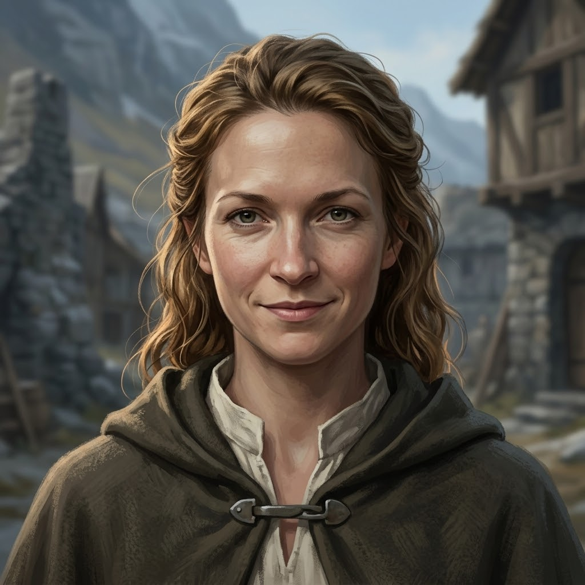

Rae Thorne
Carter of the last cart to the foot of the Steps
Appearance
in briefTwenty-seven, or near it, and strong through the shoulders in the way that comes from hauling rather than from Grace. She has a fair, open face with the wind's colour in it, grey-green eyes that stay on the road, and honey-brown hair that the hood of her cloak gives up holding, so that it falls loose past her shoulders and curls in the damp. She wears a dark hooded wool cloak pinned at the throat with a plain iron clasp over a linen shirt the colour of old cream, and a small brass bell hangs on a cord at her belt and rings whenever the cart jolts, which she never seems to hear. She drives the last cart up the Holloway to the foot of the Thousand Steps, talks to her oxen in whole sentences and to knights hardly at all, and looked at Darrow's hurt leg once, the way a carter looks at a cracked wheel.
Last seen
on the pageChapter 1 · Scene 3 — The Law of Bells · Saint Ysolde's
At Mother Ione's council, telling how the list was read at Coldmere; afterwards, on the stair, asking Darrow whether he rode a grey at the ford, and going on up without saying why.
Now
as far as the reader knowsIn the House, where she stood by the door of the warming room at Mother Ione's council with snow melting on her shoulders, and said, when Darrow asked to be sent down the Steps, that down is where they are. Her cart and two oxen wait at the winch-house below, in the grey cloaks' path. She has asked Darrow whether he rode a grey at the ford and not said why.
Story so far
spoiler-freeShe drove the last cart of Darrow's road north, a salt-cart off the Holloway with its load left at the landing to make room for two knights and a leg that was not there, talking to her oxen the whole day and to her passengers not at all. When Hollis started on her she said 'Aye' as if he had remarked on the weather. At the foot of the Steps she looked at Darrow's leg once, the way a carter looks at a cracked wheel, rang the bell at her belt three times, and a bell answered from the cloud; the lay brothers who came down with the litter called her Rae, and the one thing she said to Darrow all day was that they would count him up and he should not help. Seven weeks after Darrow's Binding she was in the taproom at Coldmere with the House's salt on her cart when the Confessors read out their list of the Faithless at Saint Ysolde's. She drove the Holloway in the dark ahead of them, climbed the Steps before the bell, and told the winch-brothers, who told the kitchen; her cart and oxen wait at the winch-house below, in the grey cloaks' path.
Quote
Slow. So the room could count.
Relationships
as seen on the page- Ser Darrow of Edgemoorthe knight she drove to the foot of the Steps
She looked at his leg once the way a carter looks at a cracked wheel, rang for the litter, and said one thing to him all day; seven weeks after the Binding he knew her cart from the infirmary window and had not forgotten it.
- Ser Hollis Garrowthe old knight who cursed her from her own cart
When he started on her past the second milestone she said 'Aye' as if he had remarked on the weather, and the cart went on.
- Wren Ashdownthe runner who carried her news into the hall
Wren told the infirmary hall that Rae had heard the list read at Coldmere, driven through the dark ahead of the grey cloaks and climbed the Steps before the bell.
The Reckoning
as Darrow reads it⟦ THE RECKONING ⟧
Level 3 · Bound
Ember banked
Arts ⟦ unread ⟧
Deeper ⟦ unread ⟧
Read with Warden's Eye II. Stronger sight reads deeper. The ranks of the Ember run Bound · Kindled · Tempered and up; Oathsworn is borrowed strength.
Known facts
13What the page has shown (13)
- She drove the last cart of the road north, a salt-cart off the Holloway, its load left at the landing to make room for two knights and a leg that was not there.Prologue · II — The Steps
- She talked to her oxen the whole of the last day and to her passengers not at all, and when Hollis started on her past the second milestone she said 'Aye' as if he had remarked on the weather.Prologue · II — The Steps
- A small brass bell hangs on a cord at her belt and rings when the cart jolts; at the foot of the Steps she rang it three times, hard, and after a while a bell answered from the cloud.Prologue · II — The Steps
- She looked at Darrow's leg once, the way a carter looks at a cracked wheel: a thing that would have to be seen to, and not by her.Prologue · II — The Steps
- The first of the lay brothers coming down with the litter called her Rae, as if her name were a thing you could lean on.Prologue · II — The Steps
- The one thing she said to Darrow in the whole of that day, as they lifted him: 'They'll count you up. Don't help.'Prologue · II — The Steps
- By Wren's account she was in the taproom at the inn in Coldmere with the House's salt on her cart when the Confessors' list was read out, and heard every name.Chapter 1 · Scene 1 — The Reading of the Knots
- She drove the Holloway in the dark ahead of the grey cloaks, came up the Steps before the bell, and told the winch-brothers, who told the kitchen.Chapter 1 · Scene 1 — The Reading of the Knots
- Her cart stands at the winch-house at the foot of the Steps with its shafts up and two oxen in the snow; Darrow knew it from the infirmary window as the cart he had ridden the last of the Holloway in.Chapter 1 · Scene 1 — The Reading of the Knots
- Wren's ledger counts one cart at the winch-house, Thorne's, and one load waiting on the cage.Chapter 1 · Scene 1 — The Reading of the Knots
- At Mother Ione's council she said the list was read slow, so the room could count; and the room counted.Chapter 1 · Scene 3 — The Law of Bells
- On the stair after the council she stopped one step above Darrow, eye to eye, and asked whether he rode a grey at the ford. When he said yes and asked why, she went on up without answering; the bell at her belt rang once at the turn.Chapter 1 · Scene 3 — The Law of Bells
- When Darrow asked to be sent down the Steps before the grey cloaks came, she said from the door that down is where they are: the first thing she had said in the council that was not an answer.Chapter 1 · Scene 3 — The Law of Bells